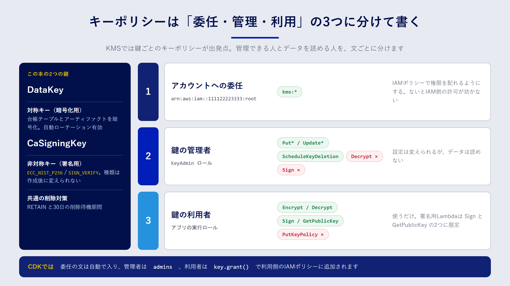

Chapter 07
実践1：KMSの鍵をIaCで管理する
この章で分かること
- KMS の鍵を IaC で管理すると、何がうれしいのか
- キーポリシーで「鍵を管理する人」と「鍵を使う人」を分ける方法
- 鍵を誤って削除しないための設定と、ローテーションの考え方
鍵こそコードで管理したい
AWS Key Management Service（KMS）は、暗号化や署名に使う鍵を作って保管するサービスです。鍵の本体は KMS の外に出ることがなく、利用者は「この鍵で暗号化して」「この鍵で署名して」と API で依頼するだけです。
鍵は、ほかのリソースと比べて失敗したときの影響が大きいリソースです。
- 鍵を削除すると、その鍵で暗号化したデータは二度と復号できません。
- キーポリシー（鍵に付けるアクセス制御）を誤ると、誰も鍵を使えなくなったり、逆に使わせたくない人まで使えたりします。
- 非対称キーの種類（鍵の長さやアルゴリズム）は、作ったあとで変えられません。
だからこそ、コンソールで作るのではなく、IaC で「どんな設定で、誰に何を許すのか」をレビューしてから作るのが向いています。この章では、8章の証明書発行 Lambda で使う二つの鍵を題材にします。
対称キーと非対称キー
KMS の鍵には、大きく分けて2種類あります。
| 種類 | 仕組み | 主な用途 | この本での使い方 |
|---|---|---|---|
| 対称キー | 暗号化と復号に同じ鍵を使う | S3・DynamoDB などのデータ暗号化 | DataKey：証明書台帳やアーティファクトの暗号化 |
| 非対称キー | 秘密鍵と公開鍵のペア | デジタル署名、公開鍵暗号 | CaSigningKey：クライアント証明書への署名 |
対称キーは、AWS のサービスと組み合わせて「保存データの暗号化」に使うのが一般的です。S3 バケットや DynamoDB テーブルに鍵を指定すると、読み書きのたびにサービスが裏で KMS を呼び出します。
非対称キーは、秘密鍵を KMS の中に閉じ込めたまま署名できる点が特長です。8章では、この性質を使って「秘密鍵をどこにも保存しない認証局（CA）」を作ります。非対称キーの キー仕様（ECC_NIST_P256 など）と キーの用途（署名用の SIGN_VERIFY か、暗号化用の ENCRYPT_DECRYPT か）は作成後に変更できないので、最初に正しく決めておく必要があります。
キーポリシーを理解する
KMS の権限は、IAM とは少し考え方が違います。ほかのサービスでは IAM ポリシーだけで権限が決まることが多いのに対して、KMS では 鍵ごとのキーポリシーが出発点 になります。キーポリシーで許可されていない限り、IAM ポリシーで Allow しても鍵は使えません。

実務でよく使うのは、次の三つの文（Statement）の組み合わせです。
- アカウントへの委任：アカウントのルート（
arn:aws:iam::111122223333:root）にkms:*を許可する文です。AWS が作るデフォルトのキーポリシーにも含まれています。「ルートユーザーに全権を渡す」という意味ではなく、「このアカウントの IAM ポリシーで、鍵の権限を配ってよい」という委任の意味を持ちます。これがないと、IAM 側でどれだけ許可しても鍵を使えません。 - 鍵の管理者：鍵の設定変更、エイリアスの管理、削除の予約などを許可します。暗号化・復号・署名は含めません。
- 鍵の利用者：暗号化・復号、あるいは署名など、実際に鍵を使う操作だけを許可します。設定の変更はできません。
CloudFormation で書く
samples/cfn/kms-key.yaml は、三つの文をそのまま書いた例です。管理者と利用者のロールは、パラメータで受け取ります。
Resources:
DataKey:
Type: AWS::KMS::Key
DeletionPolicy: Retain
UpdateReplacePolicy: Retain
Properties:
Description: Data encryption key for the IaC book sample
EnableKeyRotation: true
PendingWindowInDays: 30
KeyPolicy:
Version: '2012-10-17'
Statement:
- Sid: EnableAccountDelegation
Effect: Allow
Principal:
AWS: !Sub 'arn:${AWS::Partition}:iam::${AWS::AccountId}:root'
Action: kms:*
Resource: '*'
- Sid: KeyAdministration
Effect: Allow
Principal:
AWS: !Ref KeyAdminRoleArn
Action:
- kms:Describe*
- kms:Put*
- kms:Update*
- kms:ScheduleKeyDeletion
- kms:CancelKeyDeletion
# ほかの管理系アクションは省略
Resource: '*'
- Sid: KeyUsage
Effect: Allow
Principal:
AWS: !Ref KeyUserRoleArn
Action:
- kms:Encrypt
- kms:Decrypt
- kms:ReEncrypt*
- kms:GenerateDataKey*
- kms:DescribeKey
Resource: '*'
キーポリシーの中の Resource: '*' は、「この鍵自身」を指します。キーポリシーは鍵に直接付くので、ほかの鍵を指すことはありません。IAM ポリシーの Resource: "*" とは意味が違うので、ここは安心して書いて大丈夫です。
CDK で書く
CDK の kms.Key を使うと、委任の文は自動でキーポリシーに入ります。管理者は admins で指定し、利用者は鍵を使う側で grant 系のメソッドを呼んで許可します。サンプルの KmsStack は次のとおりです。
const adminRoleArn = this.node.tryGetContext("keyAdminRoleArn") as string | undefined;
const admins = adminRoleArn
? [iam.Role.fromRoleArn(this, "KeyAdminRole", adminRoleArn, { mutable: false })]
: undefined;
// データ暗号化用の対称キー
this.dataKey = new kms.Key(this, "DataKey", {
description: "IaC book sample: data encryption key",
enableKeyRotation: true,
pendingWindow: cdk.Duration.days(30),
removalPolicy: cdk.RemovalPolicy.RETAIN,
alias: "iac-book/data",
admins,
});
// クライアント証明書に署名するための非対称キー
this.caSigningKey = new kms.Key(this, "CaSigningKey", {
keySpec: kms.KeySpec.ECC_NIST_P256,
keyUsage: kms.KeyUsage.SIGN_VERIFY,
pendingWindow: cdk.Duration.days(30),
removalPolicy: cdk.RemovalPolicy.RETAIN,
alias: "iac-book/client-ca",
admins,
});
管理者のロールは、cdk deploy -c keyAdminRoleArn=arn:aws:iam::111122223333:role/KeyAdmin のようにコンテキストで渡します。指定しなければ委任の文だけになり、IAM ポリシー側で管理者を決める運用になります。
利用者の権限は、8章の CertIssuerStack で次のように付けています。
// 署名用の鍵は、署名と公開鍵の取得だけ
caSigningKey.grant(issuer, "kms:Sign", "kms:GetPublicKey");
// 台帳テーブルの暗号化に使う鍵は、暗号化と復号
dataKey.grantEncryptDecrypt(issuer);
grant は、指定した操作だけを、その鍵だけに限定して許可する IAM ポリシーを生成します。kms:* のような広い許可を書かずに済むのが利点です。
鍵を削除から守る
鍵の削除は、IaC の操作ミスで起こり得る事故の中でも特に影響が大きいものです。サンプルでは、三重の備えをしています。
| 設定 | 効果 |
|---|---|
removalPolicy: RETAIN |
スタックを削除しても、鍵は削除せずに残す |
pendingWindow: 30日 |
削除を予約してから実際に消えるまでの待機期間。7〜30日で指定し、その間は取り消せる |
alias |
鍵 ID ではなく別名（alias/iac-book/data）で参照できるようにする |
KMS の鍵は、ScheduleKeyDeletion で削除を予約しても、待機期間が過ぎるまでは CancelKeyDeletion で取り消せます。待機期間を最大の30日にしておけば、誤って予約しても気づく時間を確保できます。待機期間中の鍵は使えなくなるので、利用しているサービスでエラーが出はじめたら、それが気づくきっかけになります。
ローテーションの考え方
自動ローテーション は、対称キーで使える機能です。有効にすると、KMS が定期的に新しい鍵の素材（キーマテリアル）を作ります。既定では1年ごとで、間隔は変更できます。古い素材も KMS の中に残るので、過去に暗号化したデータもそのまま復号できます。鍵 ID や ARN は変わらないので、アプリケーション側の変更は不要です。
一方、非対称キーは自動ローテーションに対応していません。署名用の鍵を入れ替えたいときは、新しい鍵を作り、エイリアスの向き先を切り替えます。8章の CA 用の鍵で考えると、次の手順になります。
- 新しい非対称キーを作り、新しい CA 証明書を発行する
- mTLS のトラストストアに、新旧両方の CA 証明書を入れる
- 発行 Lambda を新しい鍵に切り替える
- 古い CA で発行した証明書がすべて期限切れになってから、古い CA をトラストストアから外す
鍵の種類を変えられないことも含めて、非対称キーは「作り直す前提」で運用を設計しておくと安心です。
テストで設定を守る
鍵の設定は、あとから誰かがうっかり変えてしまうと危険です。CDK のユニットテストで、守りたい設定を明文化しておきます。
test("DataKey はローテーション有効・CaSigningKey は署名専用の非対称キー", () => {
const t = Template.fromStack(kmsStack());
t.hasResourceProperties("AWS::KMS::Key", { EnableKeyRotation: true });
t.hasResourceProperties("AWS::KMS::Key", {
KeySpec: "ECC_NIST_P256",
KeyUsage: "SIGN_VERIFY",
});
});
removalPolicy: RETAIN は、テンプレート上では DeletionPolicy: Retain になります。これもテストで確認しておくと、削除ポリシーを外す変更がレビューをすり抜けにくくなります。
コストの目安
カスタマーマネージドキーは、1個あたり月額の料金がかかります。加えて、暗号化・復号・署名などの API 呼び出しにもリクエスト単位の料金がかかります。自動ローテーションで増えた古いキーマテリアルにも料金がかかる場合があります。料金は変わることがあるので、使う前に AWS KMS の料金ページで確認してください（本書の記述は2026年9月時点の情報をもとにしています）。
まとめ
- KMS の鍵は、削除やポリシーの誤りの影響が大きいので、IaC でレビューしてから作ります。
- キーポリシーは「アカウントへの委任」「鍵の管理者」「鍵の利用者」の三つの文に分けると、職務を分離できます。
- CDK では、管理者を
admins、利用者をgrantで指定します。利用者の権限は必要な操作だけに絞ります。 RETAIN、30日の削除待機期間、エイリアスで、鍵を誤削除から守ります。- 対称キーは自動ローテーションを有効にし、非対称キーは新しい鍵への切り替え手順を用意しておきます。
確認問題
問1. IAM ポリシーで kms:Decrypt を許可したのに、復号が拒否されました。キーポリシー側で確認すべき点は何ですか。
解答例
キーポリシーに、アカウントへの委任の文（ルートへの kms:* の許可）があるかを確認します。この文がないと、IAM ポリシーでの許可は鍵に対して効きません。委任の文を置かない設計なら、キーポリシー自体にそのロールへの kms:Decrypt の許可が必要です。
問2. 鍵の管理者に kms:Decrypt を含めないのは、なぜですか。
解答例
鍵の設定を変更できる人と、データを読める人を分けるためです。管理者が復号もできると、一人でデータを読み出せてしまいます。役割を分けておけば、どちらか一方の権限が漏れても被害を限定できます。
問3. 8章の CA 署名用の非対称キーを、別のキー仕様に変更したくなりました。どう対応すればよいですか。
解答例
キー仕様は作成後に変更できないので、新しい非対称キーを作ります。新しい鍵で CA 証明書を作り、トラストストアに新旧両方の CA 証明書を入れたうえで、発行 Lambda を新しい鍵に切り替えます。古い CA の証明書がすべて期限切れになってから、古い CA をトラストストアから外します。